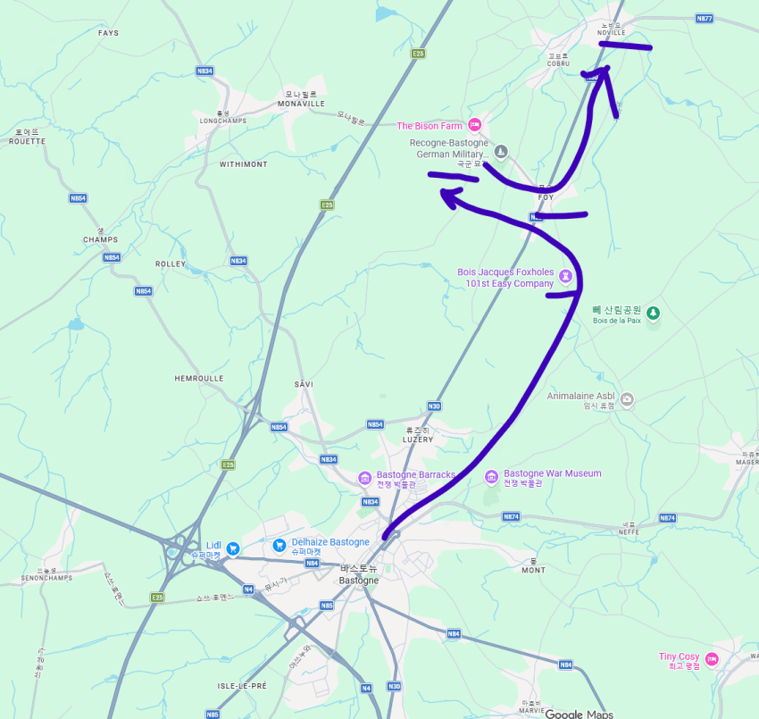
바스토뉴 전적지 동선입니다.
부아자크 Bois Jacques - 포이 Foy - 라코뉴 Recogne - Noville 노비유 를 갔는데
볼게 있는건 라코뉴 까지고, 노비유는 실수로 갔습니다.
그 외에도 네페 Neffe 우팔리즈 Houffa1ize 등 다른 장소도 있지만 서구인도 아니고 관계없는 극동아시아인 수준에서는 이정도면 충분합니다.
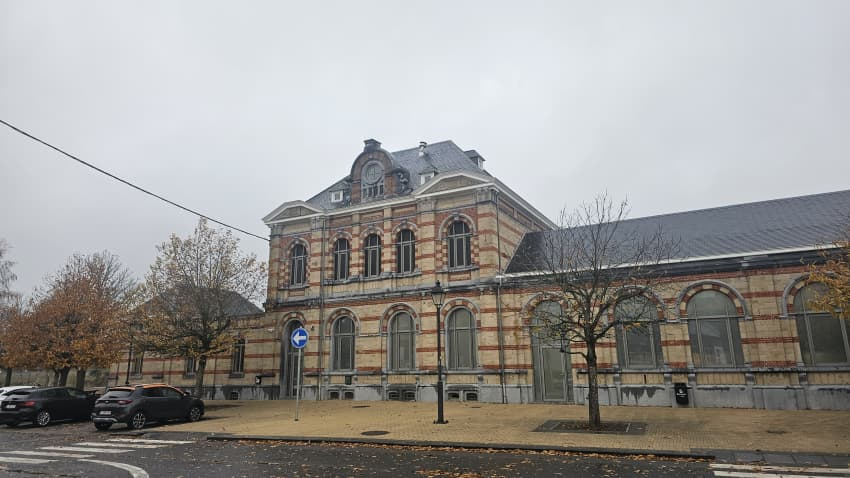
바스토뉴남부시외버스터미널의 민간기업에서 자전거를 빌렸습니다
비포장도로를 들어갈것 같고 체력문제도 있으니 전기 산악자전거를 빌렸는데
자전거를 주차할 수 있는 킥스탠드가 없어서 당황스러웠습니다.
상식이 있으면 바스토뉴에 자전거 빌리러 오는 사람이 철인3종 네덜란드 정복을 하러오는것은 아니잖아요.
아르덴 숲 돌아다니면서 중간중간 내려서 경치보고 하러 오는건데 민간기업의 부실한 시장조사에 아쉬움을 표합니다.
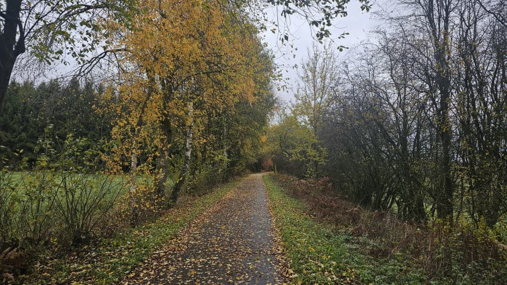
부아자크까지 가는 산책로가 있어서 다행히 도로위에서 자동차와 경쟁할일 없이 신속하게 이동할수 있었습니다.
민간기업과는 달리 바스토뉴교통청은 시장조사를 제대로 해둔것 같습니다.
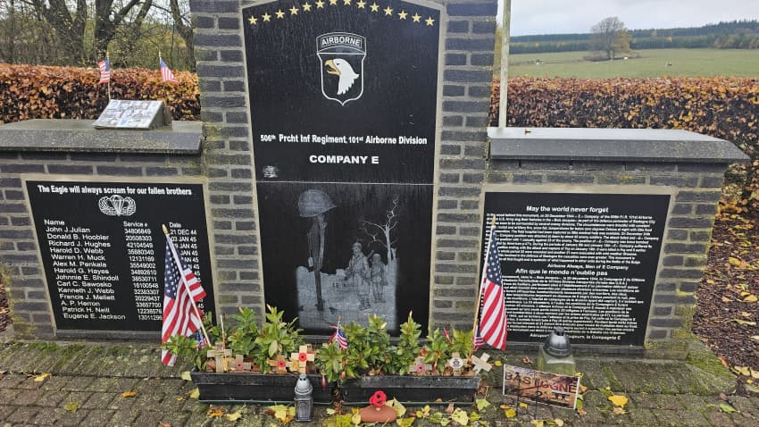
부아자크로 들어가는 교차로에는 101공수사단 이지중대에 대한 기념비가 있습니다.
6화에서 총맞은 줄리안, 후블러, 먹, 펜칼라 .. 스포일러 덩어리입니다.
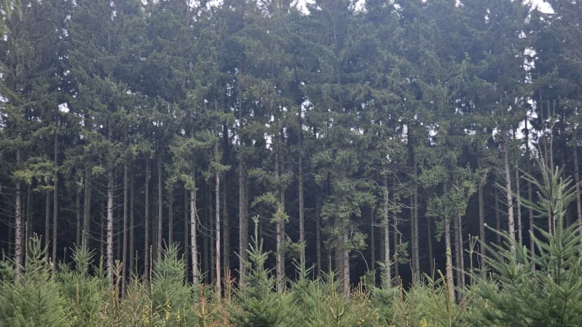
아르덴숲은 정말로 전차의 기동이 힘든 울창한 숲지대인걸까요?
평생 궁금했었는데 햇빛도 안들게 어두운 숲을 보니 역시 명성에 어울리는 삶을 사는 숲입니다.
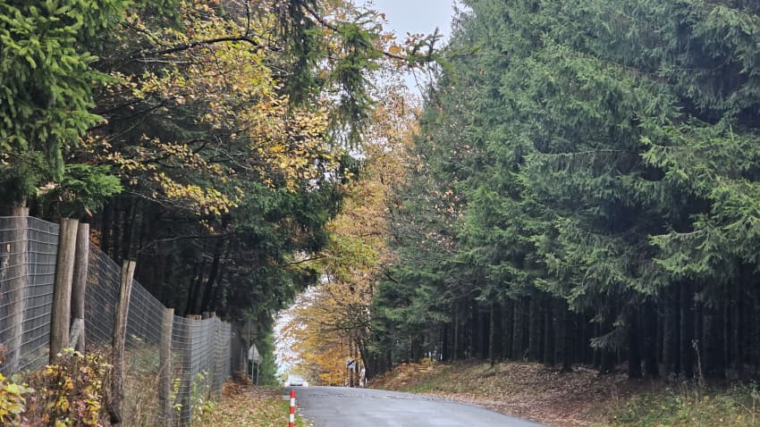
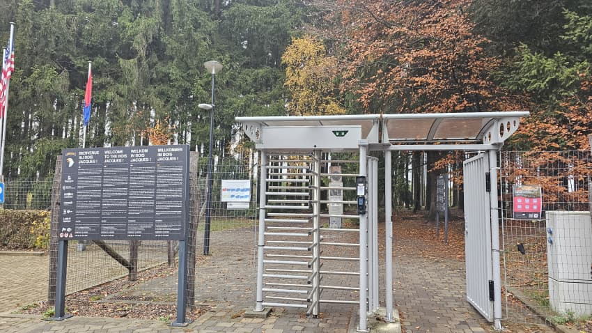
첫번째 어트랙션 부아자크 입니다.
밴드오브 브라더스 바스토뉴편인 6화와 7화의 배경"같은" 곳이고, 작중에는 7화에 일부 중대원이 도그중대에 들어가 부아자크를 방어하는 내용이 나옵니다.
담배갑을 주고 포로를 학살했다는 스피어스가 나와서 일방적으로 콤튼한테 개인사를 묻고 떠나는 장면이 있습니다.
밴드오브브라더스에서 스피어스의 존재감때문에 종종 잊는데, 스피어스 중위가 노르망디 포로학살이후 처음으로 제대로 다시 등장하는 편이 7화입니다.
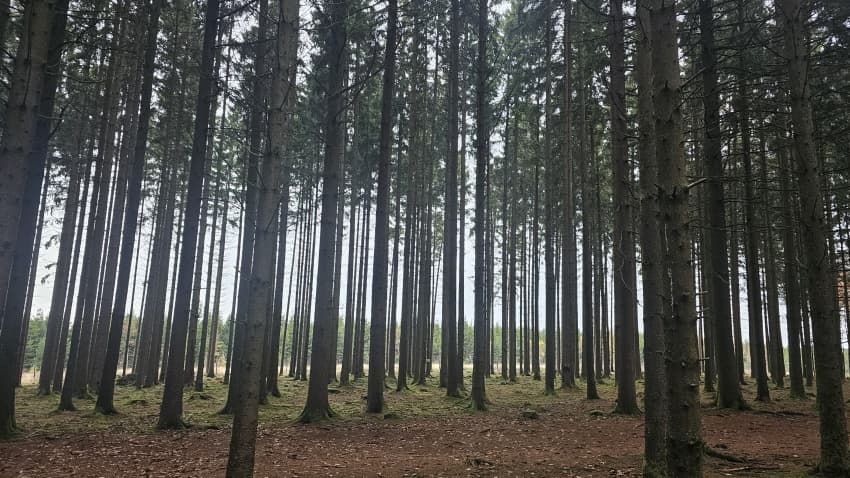
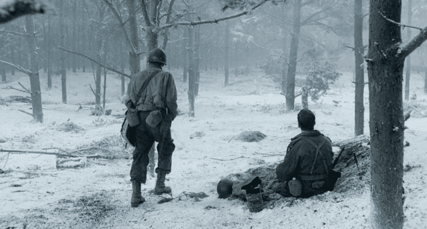
눈이 안와도 숲속을 산책하다보면 포탄이 떨어지고 유진 로가 기어다니던 6화와 7화가 기억날정도로 강렬하게 흡사한 곳이었습니다.
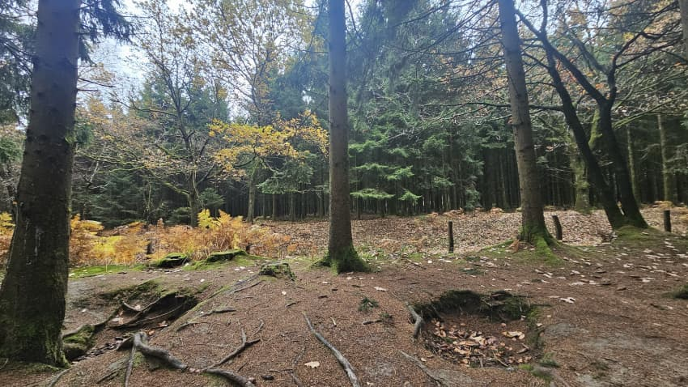
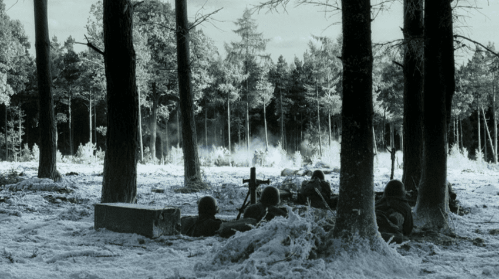
부아자크에는 폭스홀 이라고 부르는 참호들이 남아있습니다.
한둘이 아니고 여러개 남아있습니다.
아니 80년이 넘었는데 그냥 구덩이 판게 어떻게 아직도 남아있나?? 는 저도 의문이지만,
나무의 인장력과 음양오행의 기운 그리고 그냥 냅둬도 아무도 안오던 곳이라 그 흔적들이 남아있다는 듯 합니다. 원래는 이거보다 깊었겠죠.
설명에 따르면 이 참호에서 반대편을 겨누고 반대편이 독일측 참호였다고 합니다
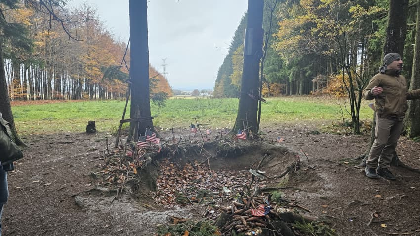
가장 유명한건 포이 마을이 보이는 참호입니다. 투어그룹을 만났는데 여기에 멈춘걸 보면 가장 유명한것같습니다.
바스토뉴 전적지 투어는 가장 접근성 좋은게 브뤼셀에서 출발하는 당일치기편이 있습니다.
그런데 그게, 가이드는 수준급이지만 컨텐츠는 정작 전적지 방문을 다 합쳐서 35분밖에 안되는게 좀 아까워서
밴드오브브라더스 복습과 자전거대여로 혼자해결했습니다.
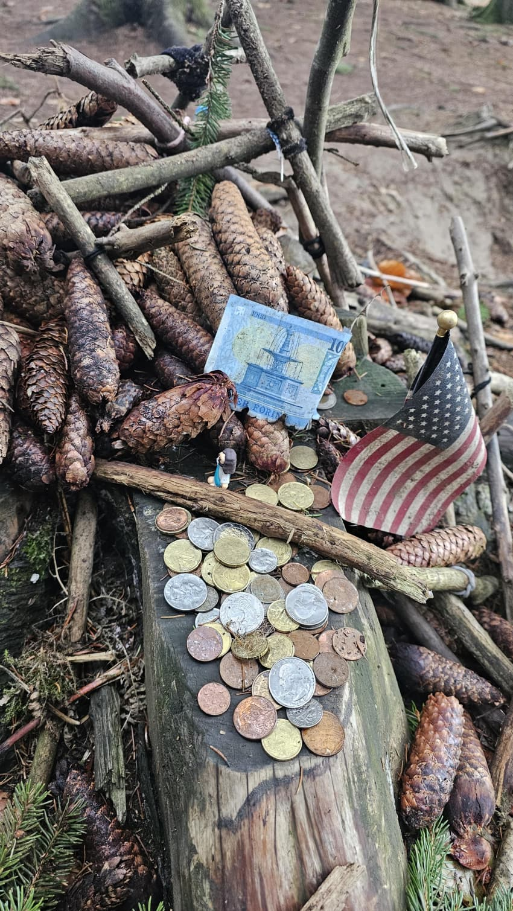
동전이 쌓여있어서 저는 트레비 분수처럼 101공수사단에 소원을 비는건가 남는 50센트를 올려두려고 했습니다.
그런데 언젠가 유튜브 숏츠에서 본 내용이, 미국에서는 전몰자와의 관계에 따라 쿼터 페니 센트 등을 올리는 추모문화가 있다는게 기억나서
여기가 묘지는 아닌데, 아마 그런 의도로 올려진게 아닌가 싶습니다.
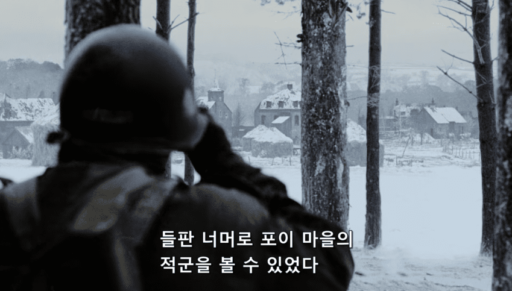
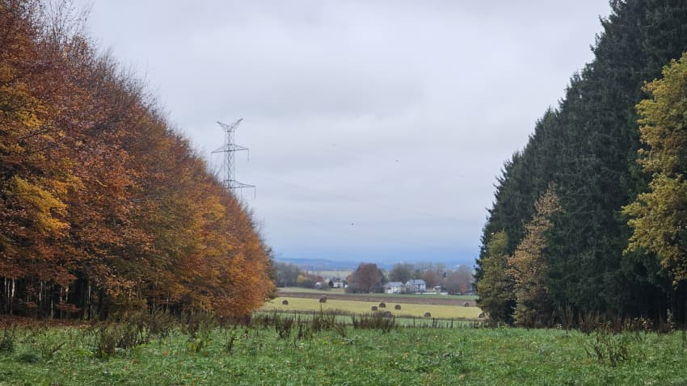
들판너머로 보이는 포이 마을
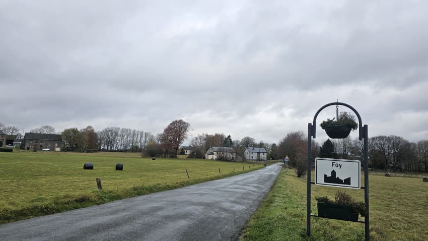
7화의 주 무대인 포이입니다.
스피어스가 이지중대를 지휘하면서 독일군 진지를 가로질러 왕복한 명장면이 있는 에피소드입니다.
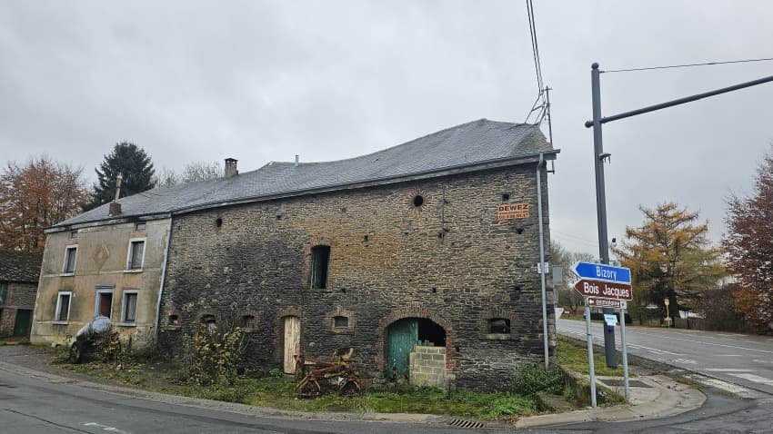
대단한건 없고 노르만식 건물이 몇채 남아있습니다.
여기에 판터 전차가 한대 전시되어있어야하는걸로 아는데.. 제가 가니 그냥 아무이유없이 없었습니다.
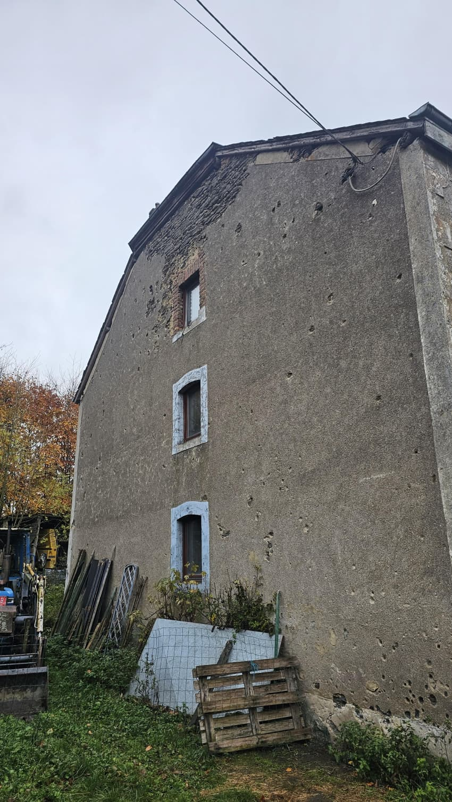
전투흔적이 남은 건물. 안의 고양이와 눈이 맞았는데 폐가가 아니고 사람이 사는것같았습니다. 얼마줘야 살수 있는 건물일까요.
구글 지도상으로는 시프티 파워스의 저격포인트 라고 나옵니다.
시프티?
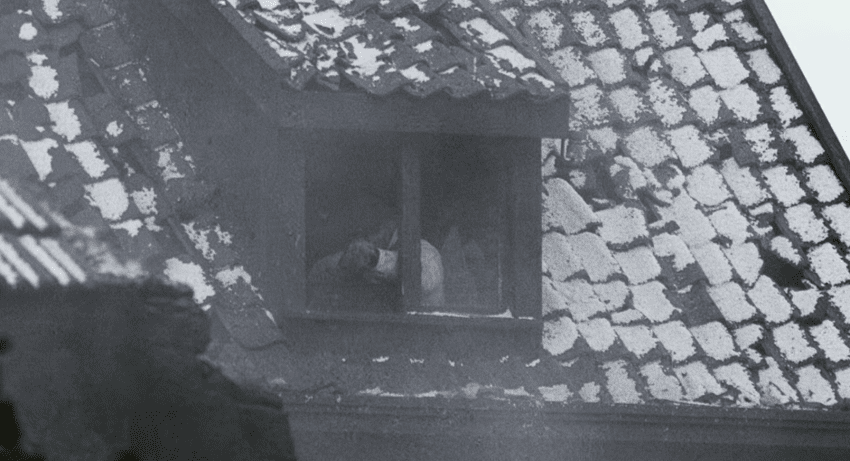
7화에서 독일군 저격수를 "명사수" 시프티가 잡은 내용입니다.
근데 드라마와는 건물이 다른 모습입니다.
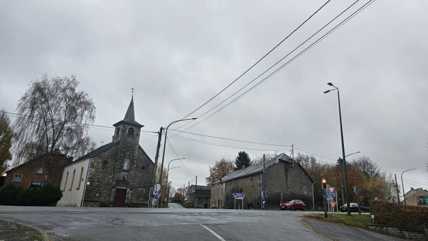
여기서 자갈밭 탓인지 빌린 자전거의 앞바퀴가 펑크나는 참사를 당했습니다.
산악자전거를 빌려서 다행이지 도시자전거 빌려서 펑크났으면 자전거점에 무슨 고소를 당했을지 모르겠습니다.
다행히 라코뉴 독일군 묘지가 가까우니 자전거점에 연락해서 독일군 묘지로 구조를 요청했습니다.
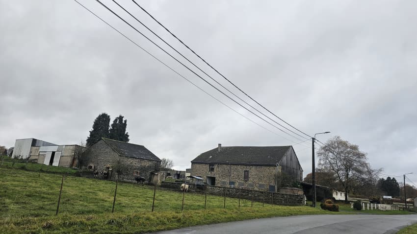
무거워진 자전거를 끌고 라코뉴까지 걸어왔습니다.
소 배출물 냄새도 나고, 노르망디 분위기 나는 건물들도 보이고, 콜오브듀티2에서 엄폐물로 자주 쓰이는 소들도 나옵니다.
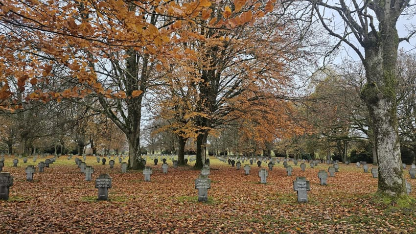
고장난 자전거를 세워두고 자전거아저씨가 오기를 기다리며 묘지를 구경하려했습니다.
1분도 안되어서 차가 한대 오더니 청년 하나가 내려서, 느닷없이 저에게 묘지를 안내해주겠다고 하는겁니다.
이.. 이 참 얼마나 이상한 상황인지 일요일 아침에 소배출물 냄새나는 시골 미군활약 보러오는 마을의 독일군 묘지에 제가 오길 기다렸다는 듯이 와서
"독일인들이 죽었다" 외에 묘지에 무슨 설명이 필요하다고..?
자전거아저씨를 기다려야하는 상황이지만 거절하기도 뭐해서 묘지에 동행이 생겼습니다.
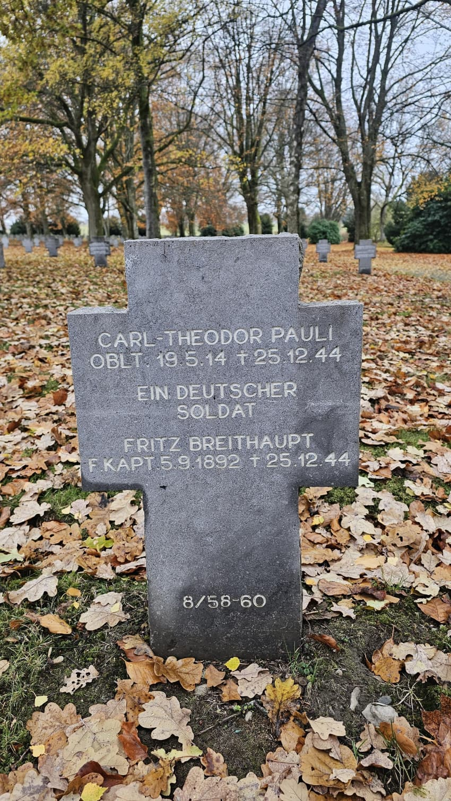
묻힌 독일군중 가장 오래된 사람, 프리츠 브라이트하우프트 해군장교입니다.
당시 독일군 상황을 반영하듯, 육군외에도 많은 해군 공군 인원들이 묻혀있었습니다.
돌 하나당 앞 뒤로 3명씩 6명, 총 6807명이 안장되어있고 식별표를 통해서 대부분은 신원이 밝혀졌지만 몇몇은 이름없는 군인이라고 적혀있습니다.
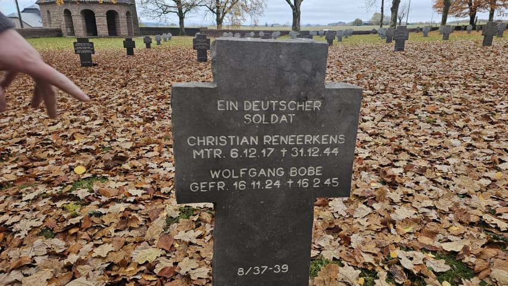
그런데.. 진짜 빨간깃발이 켜졌습니다.
이 동행, 독일인인데 제 네오나치 레이더가 348126% 네오나치라고 울부짖고있었습니다.
모든 묘비마다 이 사람은 룩셈부르크인이다, 이 사람은 덴마크인이다, 이 사람은 네덜란드인이다, 이 사람은 "실레시아"인이다,
이 사람은 해군, 이 사람은 공군장교, 이 사람은 공수부대, 이 사람은 무장친위대 장교...
어떻게 그걸 다 기억하셨죠?
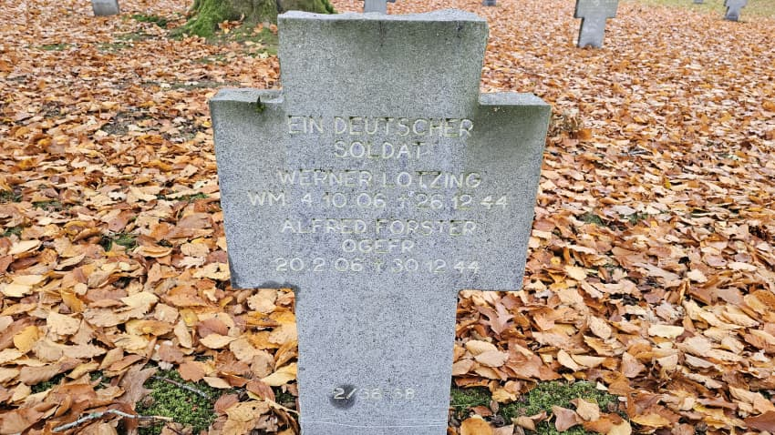
WM이 특이한 계급이라고 짚었던게 기억이 납니다. 지금 찾아보니 바흐트마이스터라는 차량병과 관련 부사관계급이었습니다.
이 동행은 자신이 독일연방군에 복무했었고 아프간에 파병갔으며 지금은 아마추어 역사가로 2차대전 독일 참전용사, 보불전쟁, 1차대전을 조사하고있다고 밝혔습니다.
어제도 "아르덴공세" (독일측 이름으로 불렀습니다) 참전용사를 만나고 왔다면서 이번에는 포이에서 부아자크를 바라보며 참호를 파고 공격했던 독일쪽의 이야기를 길게 해주었습니다.
열정적으로 독일을 위해 싸웠던 룩셈부르크인들의 이야기 (?근데 왜 굳이 이 주제를), 만토이펠을 보좌했던 참전용사 이야기, 자기 할아버지가 스탈린그라드에서부터 아르덴공세까지 참전했다는 이야기...
솔직히 아직도 참전용사가 남아있을줄은 몰랐습니다.
마침 부아자크에서 오는 길이라서, 밴드오브브라더스 6 7화의 이야기를 독일측에서 듣게된게 정말 행운으로 느껴졌습니다.
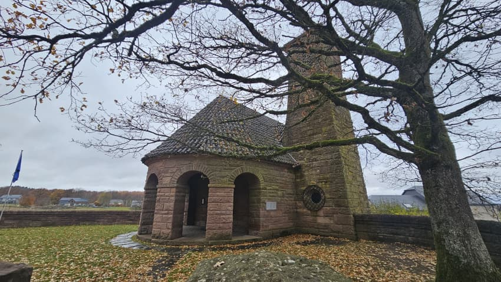
그런데 이게, 우연히 아마추어 역사가를 만나서 반대측의 이야기를 듣게되었다. 정말 알찬 하루였다. 로 끝났다면 훈훈했겠지만.. 그런건 아니었습니다.
독일이 위대하던 시절에 열정적인 청년 정도로 생각하고 조언이나 얻을겸 노르망디에 가보셨냐고 물었는데,
갑자기 욕설을 하며 노르망디에는 미국인이 너무 많다. 미군도 미국인도 미국도 싫다 같은 이야기를 해서 저는 좀 서늘해졌습니다.
현대 독일인이 러시아도 아니고 미국을 싫어하는게 쉽지않은데... 아프간 파병이 사실이라면 (솔직히 믿기힘들었습니다) 그 때문일까요?
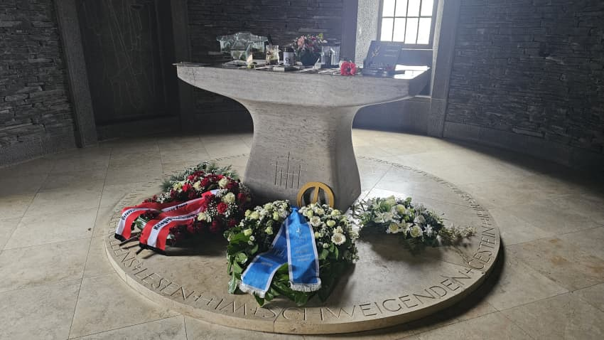
추모관 내부에 비치된 인명사전에서 구태여 동행인은 저에게 무장친위대의 사진을 보여주며 그 사람의 이야기를 꺼내주었습니다.
여기서부터는 조심스레 탐색전이 시작되었습니다.
이 사람은 네오나치일까요?
뉘른베르크의 전당대회장에 가보았다고 떡밥을 던져보았습니다.
매우 지루한곳이라고 했습니다. 어라? 국가사회주의의 출생지인데 지루하다? 네오나치가 아니군요.
그런데 다 부셔지고 망가져있어서 지루하다고 덧붙입니다. 헐,,, 234765% 네오나치입니다.
"레닌그라드"와 "스탈린그라드"에 가보았냐고 물었습니다.
"상트페테르부르크"와 "볼고그라드"라고 정정했습니다. 어라, 러시아 표기를 존중하니 네오나치가 아니네요.
공산주의자들이 붙인이름은 입에도 담기 싫다고 덧붙입니다. 좆됐습니다 23746574365% 네오나치입니다.
베를린에 가보았다고 하자 별로 마음에 들지 않는 곳이라고 합니다. 애매하군요 저도 베를린에 소련 기념비가 너무 많아서 마음에 안들었습니다.
"무슬림"과 "이스라엘인"이 너무 많아서라고 덧붙입니다.
씨발개확정432765267345%네오나치입니다. 그나마 유대인이라고 안한게 참작이 가능할지도 모릅니다.
네덜란드의 "도른하우스"와 라보에의 해군기념관에 가보았다고 떡밥을 던져보았습니다. 도른하우스는 빌헬름2의 유배지, 해군기념관은 유독 수정주의적 역사관이 옅은 곳입니다.
아주 눈빛이 반짝반짝 빛나며 훌륭한 곳이라고 동의했습니다.
136547864238762587344723875% 네오나치 확정입니다.
네오나치네오나치네오나치네오나치네오나치네오나치
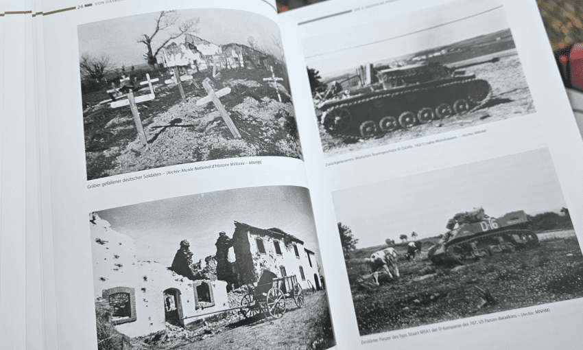
저는 좀 무서웠습니다. 말이 무슬림과 이스라엘인이지, 저와 말하는게 아니었으면 384765% 거기에 동양인도 포함되었을거잖아요.
제 뭐가 그리 마음에 들었는지 차에 데려가서 주섬주섬, 1000권밖에 인쇄안되었다는, 지하네오나치단체가 발간한게 분명한 아르덴공세독일참전용사일화수록집을 보여주며 사진을 한장한장 다 설명해주었습니다.
저는 지금 고장난 자전거를 고쳐줄 아저씨를 기다리는 퀘스트를 수행중인데 일단 참전용사이야기는 재밌고 근데 네오나치 사이드퀘스트가 끝날기미가 안보이고..
소설의 전개에서 관련없는 사건이 2개가 동시에 일어나면 안되는데요...
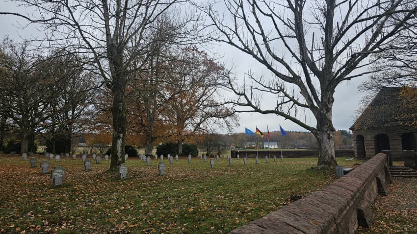
다행히 자전거 아저씨가 나타나주었고, 저는 자전거를 수리받았고, 다음 일정인 노비유로 가기 위해 여기서 작별을 하기로 했습니다.
자전거가 있어서 망정이지 없었으면 그대로 차를 얻어타고 라인강까지 태워다줬을거같습니다.
이제보니 11월 15일이 독일의 전몰자 추모일이었습니다. 왜 독일 청년이 굳이 저한테 말을 건건지 짐작이 되었습니다. 동료인줄 알았나봅니다;;
음.. 아무튼, 이런 사람들이 모여서 언젠가는 독일이 성공적인 재무장과 핵항모 건조에 착수하길 바라고
언젠가 네오나치로 체포되어서 뉴스에 나올지도 모르니 이름도 개인적으로 메모해두었습니다.
네오나치는 좀 그랬지만, 독일측 참전용사들의 구전기록과 자료가 부족하다는것에는 동의할 수 밖에 없었습니다.
독일판 밴드오브브라더스가 나올필요가 있는 것 같습니다.
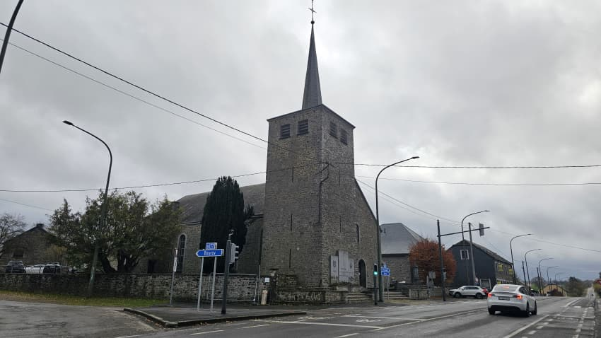
노비유. 별건없습니다. 이 직선 길로 이지중대와 기갑사단이 들어왔겠구나 상상되는 정도입니다.
밴드오브브라더스에는 포이까지만 나오고 노비유, 라첨은 나레이션으로만 지나갑니다.
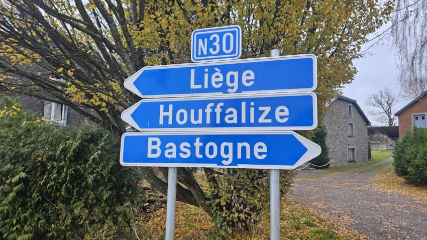
바스토뉴 길 이정표 자체도 하나의 관광포인트 같습니다.
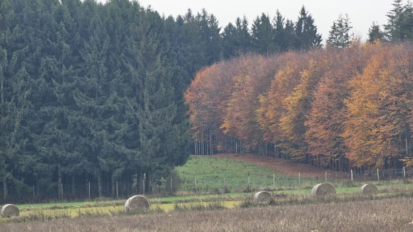
포이에서 보이는 부아자크.
이지중대가 포이를 바라볼때, 제2기갑사단도 부아자크를 바라본다는 니체의 명언이 생각납니다.
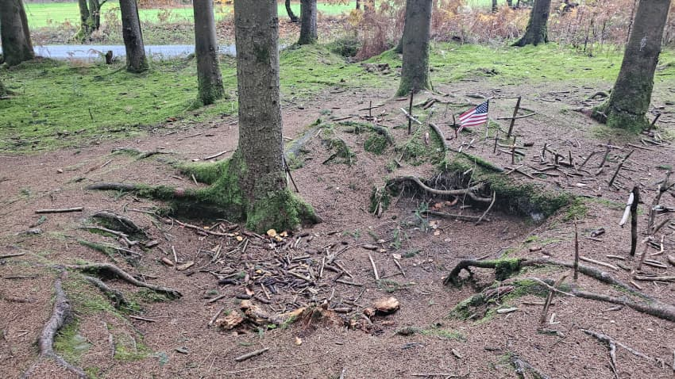
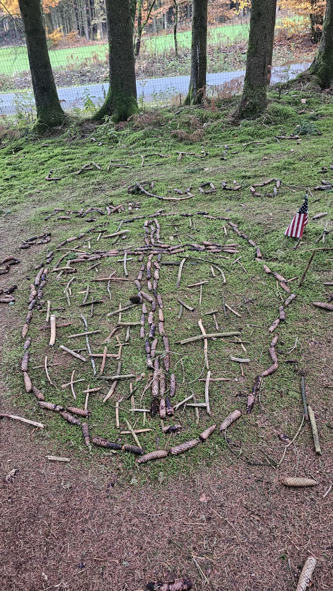
네오나치로 싱숭생숭해진 마음을 진정시키고 다시 101중대로 정화시키러 부아자크에 돌아왔습니다.
전에는 놓쳤는데 곳곳에 미국인들이 나무막대로 만든 십자가들이 쌓여있었습니다.
그게 좀 에반게리온같기도 하고 종말론사이비교의 표식같기도 하고.. 괜히 또 섬뜩해졌습니다.
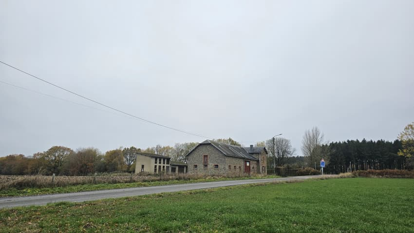
예정에는 없었지만 "라 빼" 라고하는 기념공원을 가보려고 했는데 입구가 자갈길이어서, 또 타이어 펑크날까봐 접었습니다.
미국 원주민 계열 참전용사들의 추모비들이 있다고 하는데 여기 마저도 라코뉴에서 만난 네오나치 청년이
"미국인들은 자국민도 이렇게 분리한다(segregate). 우리는 룩셈부르크인 네덜란드인 폴란드인 덴마크인들이 같은 묘지에 공존한다"는 맥락으로 소개해버려서...
아하... 음...그럴지도;; 일리가 있네요.
전적지 투어는 여기까지 하고 종료했습니다.
진짜 이지중대가 살아있는듯한 느낌이 강렬하고, 아르덴숲이라는 요세미티 옐로스톤에 버금가는 숲에서 만슈타인은 어떻게 아르덴숲을 뚫었나 확인하는 과정이 신납니다.
밴드오브브라더스를 안봐도 한번 가봐야하지 않을까요?
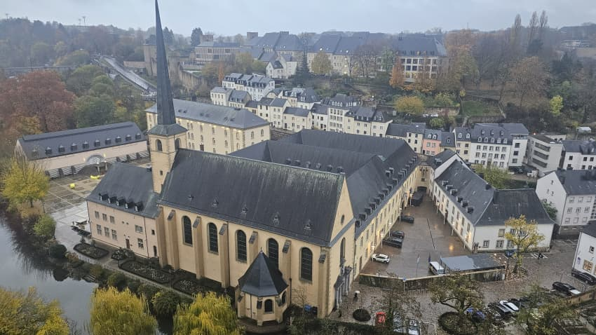
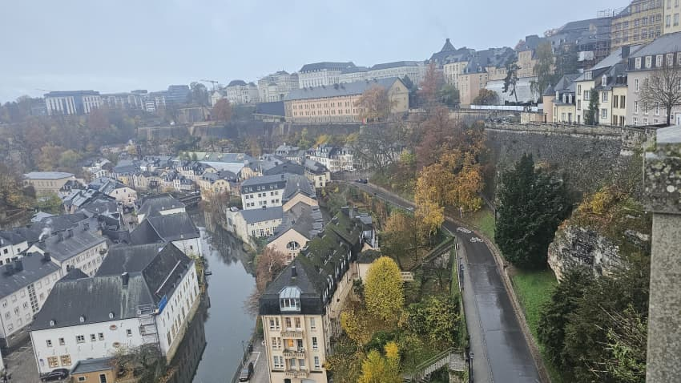
룩셈부르크를 통해 벨기에를 빠져나갔습니다. 바스토뉴가 목적지일떄는 브뤼셀공항보다 룩셈부르크 공항이 더 가까운것같습니다.
1시간정도 구경한 곳인데 비가와도 지워지지 않는 경치가 인상적이었습니다.
그런데 식비가 파스타 하나에 27유로가 나와서.. 음... 이게 부자나라 GDP의 비결??
룩셈부르크 시가지 대신 에텔브루크의 패튼묘지를 보고올수도 있었던것 같아서 아쉬움은 있습니다.
댓글
수집 당시 댓글 32개
ㅇㅇ · 11.18 10:19:20
TheDarkSideoftheMoon · 11.18 12:48:00
ㅇㅇ · 11.18 16:19:02
· ㅇㅇ(39.7) · 11.18 18:55:30
녀고생 · 11.18 17:46:50
ㅇㅇ · 11.20 01:35:27
ㅇㅇ · 11.21 23:18:26
식물빌런 · 11.22 08:37:42
ㅇㅇ · 11.22 08:46:49
· ㅇㅇ · 11.22 08:47:37
· ㅇㅇ · 11.22 08:48:27
· ㅇㅇ · 11.22 08:49:55
· ㅇㅇ(39.7) · 11.22 08:50:01
· ㅇㅇ · 11.22 11:32:30
· ㅇㅇ · 11.22 12:24:33
· ㅇㅇ · 11.22 12:30:36
· ㅇㅇ · 11.22 12:41:13
· ㅇㅇ(39.7) · 11.22 15:47:14
· ㅇㅇ · 11.22 17:20:57
ㅇㅇ · 11.22 08:53:56
ㅇㅇ · 11.22 09:04:18
히이잉 · 11.22 09:13:09
ㅇㅇ · 11.22 09:16:14
· ㅇㅇ(39.7) · 11.22 16:17:00
도길 · 11.22 09:22:41
· ㅇㅇ(39.7) · 11.22 15:44:13
판매자 · 11.22 10:36:10
ㅇㅇ · 11.22 12:12:58
ㅇㅇ · 11.22 12:21:42
ㅇㅇ · 11.22 12:45:29
ㅇㅇ · 11.22 14:34:47
ㅇㅇ · 11.22 14:52:34